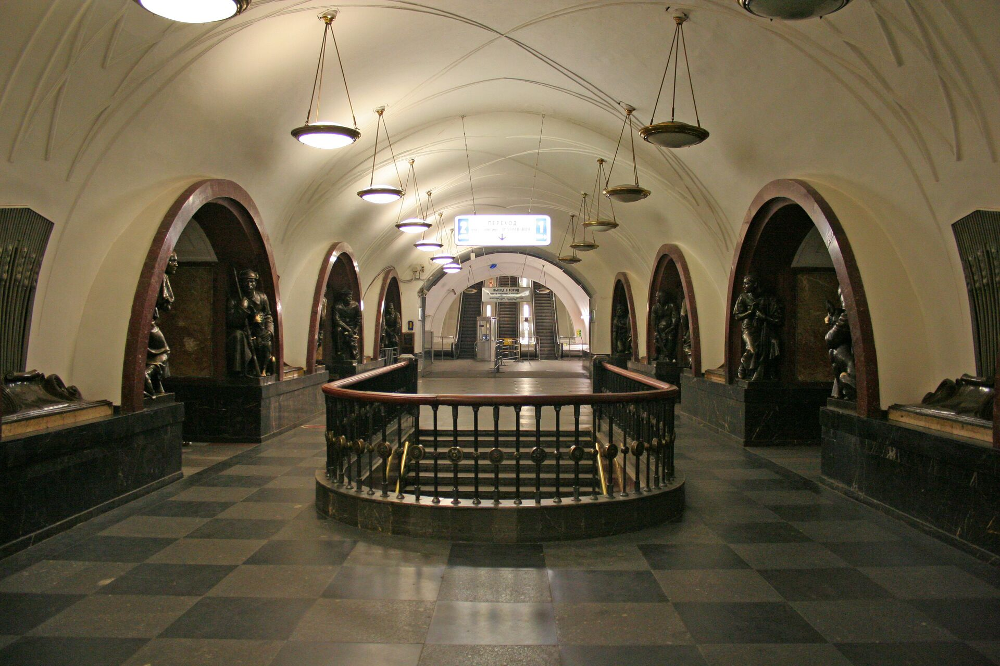

Московское метро
Московский метрополитен на 2025 год состоит из 15 линий длиной около 471,7 км в двухпутном исчислении (без учёта монорельса, МЦК и МЦД, технически с метрополитеном не взаимосвязанных) с 271 станцией, из которых более 40 являются памятниками культурного наследия. 1
